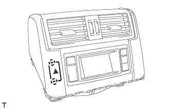

ВЫКЛЮЧАТЕЛЬ АВАРИЙНОЙ СИГНАЛИЗАЦИИ > СНЯТИЕ |
| 1. СНИМИТЕ ПАНЕЛЬ УПРАВЛЕНИЯ СИСТЕМОЙ КОНДИЦИОНИРОВАНИЯ В СБОРЕ |
 |
Освободите 4 фиксатора.
Отсоедините разъем и снимите интегрированную панель управления в сборе.
| 2. СНИМИТЕ ЦЕНТРАЛЬНУЮ ОТДЕЛОЧНУЮ НАКЛАДКУ ПАНЕЛИ ПРИБОРОВ В СБОРЕ (для моделей без дисплея) |
 |
Освободите 10 фиксаторов.
Отсоедините разъем и снимите центральную отделочную накладку панели приборов.
| 3. СНИМИТЕ ВСПОМОГАТЕЛЬНЫЙ ИНДИКАТОР В СБОРЕ (для моделей с дисплеем) |
 |
Выверните 2 болта.
 |
Вытяните вспомогательный индикатор, чтобы открепить 10 фиксаторов с обратной стороны вспомогательного индикатора.
Отсоедините разъемы и снимите вспомогательный индикатор.
| 4. СНИМИТЕ ИНДИКАТОР ПРЕДУПРЕЖДЕНИЯ О НЕДОПУСТИМОЙ ДИСТАНЦИИ (для моделей с сенсорной системой помощи при парковке TOYOTA) |
Освободите 4 захвата и снимите выключатель.
| 5. СНИМИТЕ ВЫКЛЮЧАТЕЛЬ АВАРИЙНОЙ СИГНАЛИЗАЦИИ В СБОРЕ |
|  |
Освободите 2 захвата и снимите выключатель.